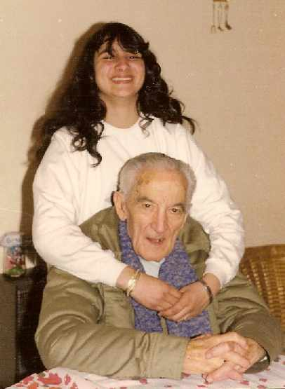

A ese papá…
A ese papá, siempre tan
lejano y ocupado.
Es posible que estuvieras volando en tu infinito,
|
 "Ese papá, con su nieta Georgina" |
Callarías tu soledad y en la mueca que curiosa
advertía,
te aislarías de los fracasos de un mundo que tal vez,
no te albergó como esperabas.
Es mejor, quizás, como hacen todos,
idealizarte en versos armoniosos.
Circunscribirte a esa ofrenda de sembrador innato,
que seguramente, no elegiste.
Pero, sabes: mi corazón está hoy doliente.
Porque no estuviste entonces y hoy tampoco te tengo.
Porque nunca supe qué soñabas ni cuáles eran tus heridas.
Porque callaste tantas cosas y hasta decirme, entonces,
cuánto me amabas…
Es posible que yo también fuera culpable,
de vivir mi propio mundo y querer jugar a “ser grande”,
desmesuradamente…
Que con mi rebeldía te alejara;
y osada,
plantara con soberbia mi vitalidad: ¿creciente?…
Pero, ya ves:
La vida nos hace paralelos los rumbos.
Después de todo, si te amé o me amaste,
hoy cae en saco roto.
Espérame en tu dimensión,
vamos pronto a reunirnos.
Gracias por amar a mamá y por, también…
aunque antes, no lo haya reconocido:
¡Regalarme la vida!
Autor: Graciela María Casartelli
Unquillo, Sierras de Córdoba, Argentina
A MI PADRE
Yo recuerdo padre, hace ya muchos años, También en mi mente se quedó grabada, Una carga dura soporta tu espalda: Muy fuertes tus brazos, firme tu mirada. Todo ese bagaje de lucha señera,
|
"Oh estimada amiga Graciela: "Vendía tristeza en jabas y angustias
en
|
Que tu poema a tu papá me llegó al
alma. Ser papá es tan dificil, Grace querida.
|
Reservados todos los derechos.
Volver